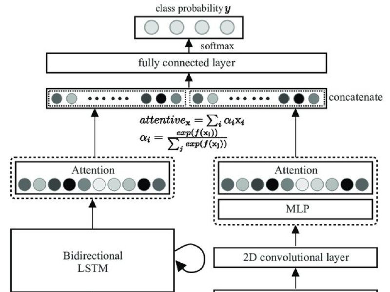
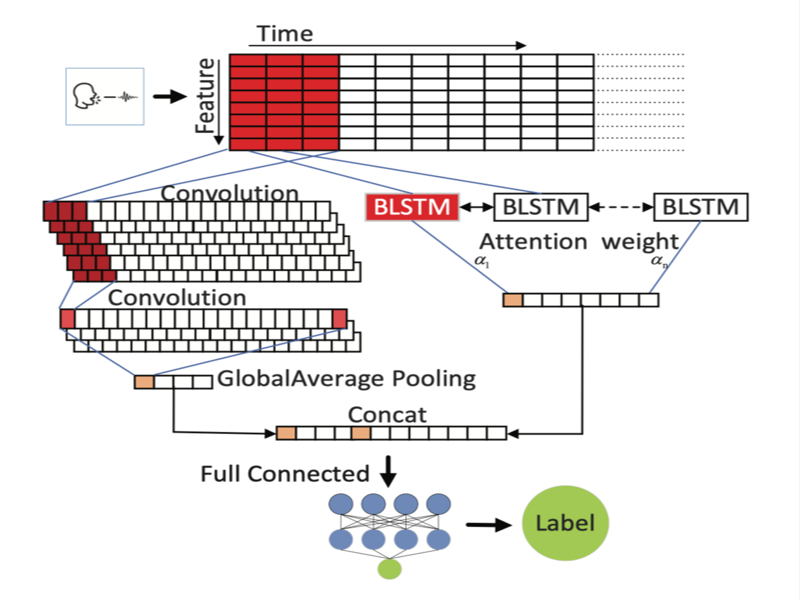

Yiqin Zhao and Tian Guo
PointAR: Efficient Lighting Estimation for Mobile Augmented Reality
International Workshop on Mobile Computing Systems and Applications (ACM HotMobile 2020)

Ziping Zhao, Zhongtian Bao, Yiqin Zhao, Zixing Zhang, Nicholas Cummins, Zhao Ren, Björn Schuller
Exploring Deep Spectrum Representations via Attention-Based Recurrent and Convolutional Neural Networks for Speech Emotion Recognition
IEEE Access

Zhao, Ziping and Zhao, Yiqin and Bao, Zhongtian and Wang, Haishuai and Zhang, Zixing and Li, Chao
Deep Spectrum Feature Representations for Speech Emotion Recognition
Proceedings of the Joint Workshop of the 4th Workshop on Affective Social Multimedia Computing and first Multi-Modal Affective Computing of Large-Scale Multimedia Data (ASMMC-MMAC'18)

Ziping Zhao, Yu Zheng, Zixing Zhang, Haishuai Wang, Yiqin Zhao, Chao Li.
Exploring Spatio-Temporal Representations by Integrating Attention-based Bidirectional-LSTM-RNNs and FCNs for Speech Emotion Recognition
Annual Conference of the International Speech Communication Association INTERSPEECH 2018